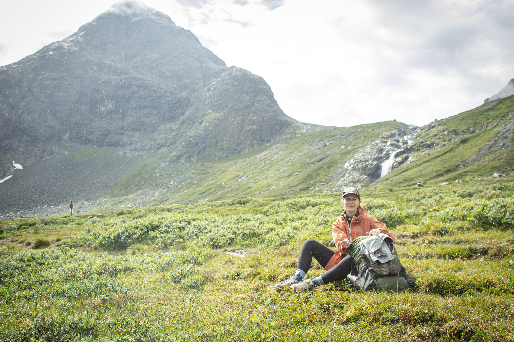

- Currently
- Lead UX Designer, freelance
- Experience
- Since 2018
- Focus
- B2C, end-to-end experiences, meganavigations, intent-led AI workflows
- Work rights
- Australia, Canada, EU/EEA, UK
- Download
- resume.pdf
Understanding problems is my bread
and butter, designing solutions is my jam.
I’ve always wanted to be a designer and have always made things in my free time, though I somehow started out in business management. After a few years working in finance in Vancouver, Canada, I took a night course in UX/UI and made the big switch. My first role was as a UX designer at a VR startup, where great mentors taught me a lot quickly. It also made me want a stronger foundation, so I went on to a Master’s in Digital Media at UBC, majoring in UX design.
From there I joined a B Corp design agency, working across all kinds of briefs and industries, and I loved it, especially the B Corp side of things.
When I moved to Oslo, I stayed on with the same agency while completing a second Master’s in Graphic Design and Illustration at Oslo National Academy of the Arts, a chance to go back to the core concepts of design.
Today, close to ten years in, I work across cross-sector enterprise clients, B2C products, and speculative projects where the intent comes first and AI tools carry the build. Startups, consultancies, and two Masters later, the thing I always did in my free time is now what I do all the time.